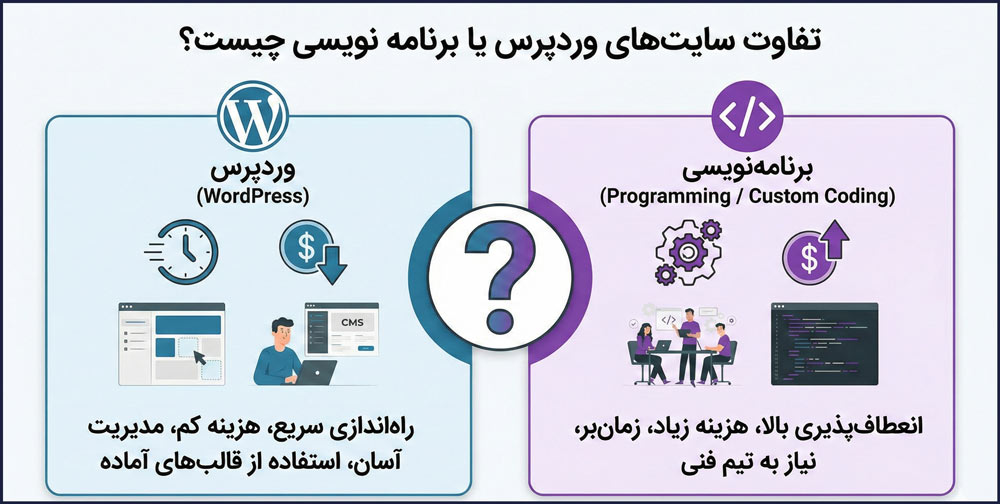
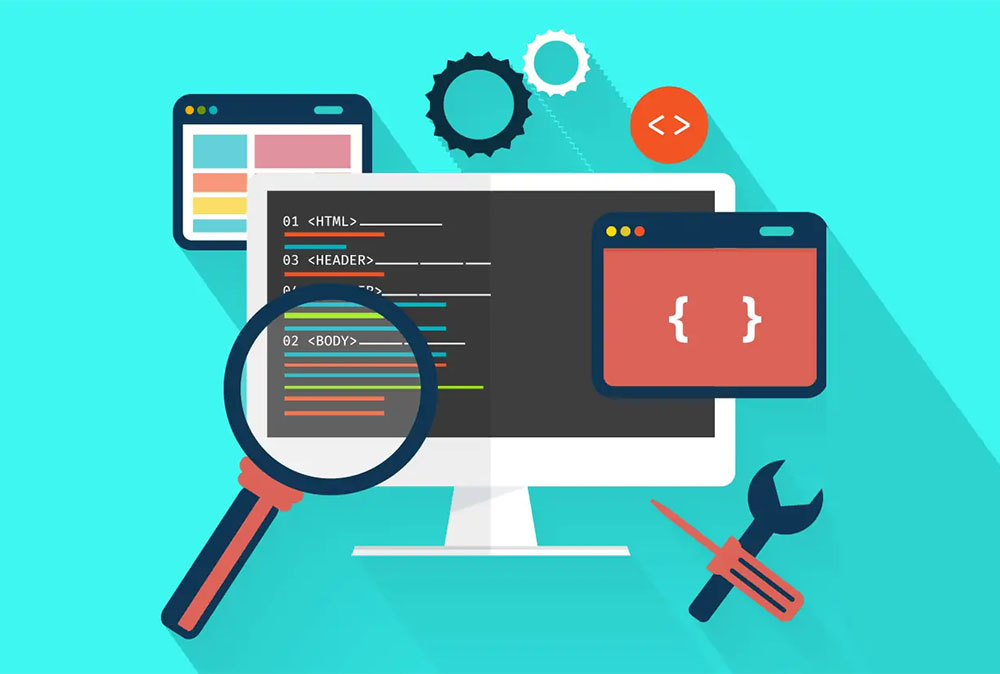
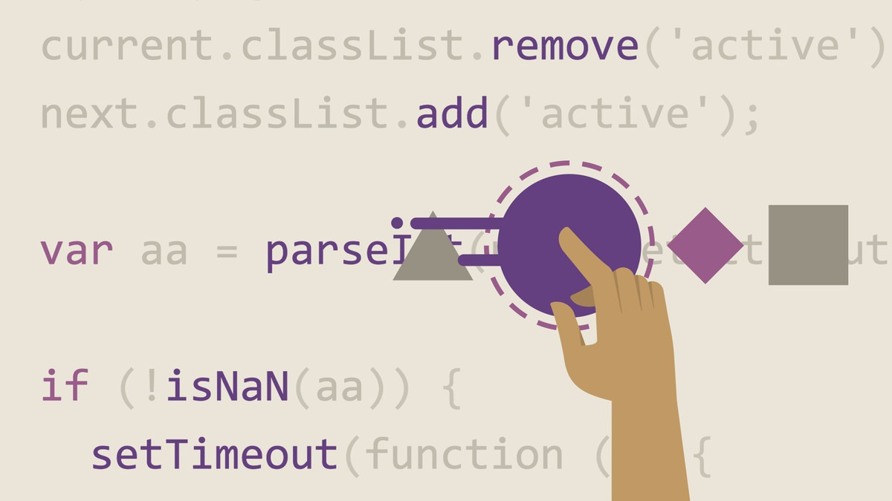

UI/UX
UI/UX
چگونه یک طراحی UI/UX عالی داشته باشیم؟
در این مقاله به اصول کلیدی طراحی رابط کاربری و تجربه کاربری میپردازیم و نکات عملی برای خلق محصولات دیجیتال موفق را بررسی میکنیم...
ادامه مطلبمقالات، آموزشها و تجربیات من در زمینه طراحی و توسعه وب
UI/UX
در این مقاله به اصول کلیدی طراحی رابط کاربری و تجربه کاربری میپردازیم و نکات عملی برای خلق محصولات دیجیتال موفق را بررسی میکنیم...
ادامه مطلب توسعه
توسعه
مقایسه کامل React، Vue و Angular به همراه بررسی کاربرد هرکدام در پروژههای مختلف و انتخاب بهترین گزینه برای نیاز شما...
ادامه مطلب بهینهسازی
بهینهسازی
با این تکنیکهای عملی و اثباتشده، سرعت سایت خود را تا ۵۰٪ افزایش دهید و تجربه کاربری بهتری برای بازدیدکنندگان خود ایجاد کنید...
ادامه مطلب
وردپرسمقایسه جامع وردپرس و React برای پروژههای مختلف وب. مزایا، معایب و بهترین کاربرد هرکدام را در این مقاله بخوانید...
ادامه مطلب
سئوهر آنچه یک توسعهدهنده فرانتاند باید درباره سئو بداند. از ساختار HTML گرفته تا Core Web Vitals و بهینهسازی عملکرد...
ادامه مطلب
UI/UXآموزش ساخت انیمیشنهای جذاب و تعاملی با استفاده از CSS و JavaScript برای بهبود تجربه کاربری و جذابتر کردن وبسایتها...
ادامه مطلب